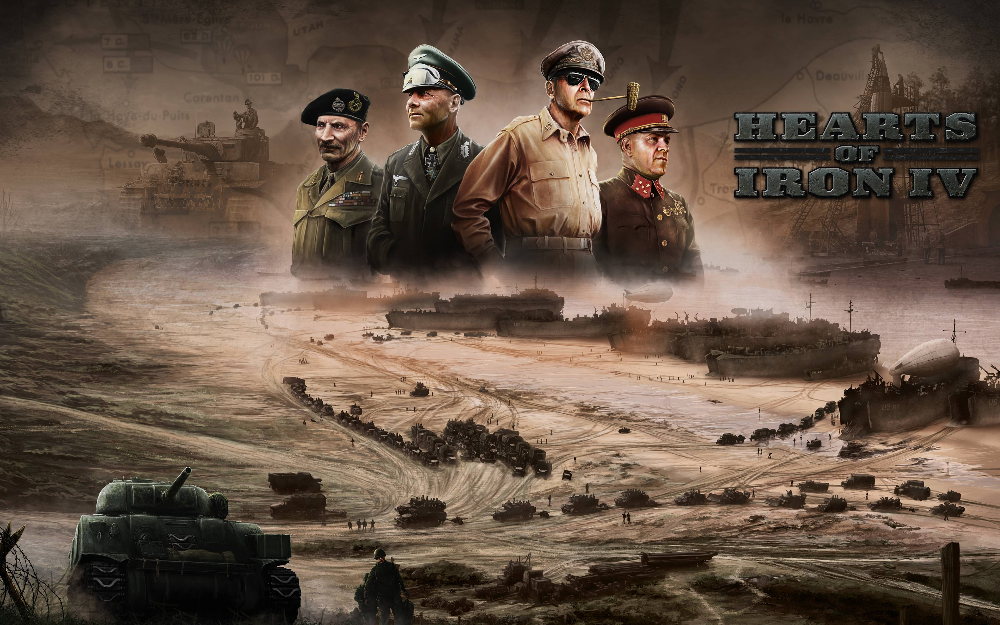
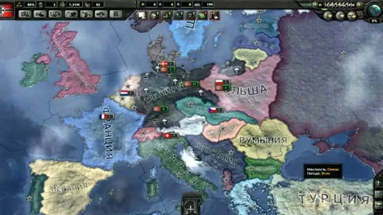

Hearts of Iron IV - это глобальная стратегическая игра, разработанная компанией Paradox Development Studio, в которой игроки могут управлять одной из многих наций во время Второй мировой войны и вести ее к победе. Игроки могут играть за любую из доступных наций, включая Германию, СССР, США, Великобританию, Францию, Японию и другие. Hearts of Iron IV — продолжение Hearts of Iron III и четвёртая игра из серии видеоигр Hearts of Iron. Как и предыдущие игры серии, Hearts of Iron IV фокусируется на Второй мировой войне. Игрок может взять под своё правление любое государство на Земле, существовавшее во время одного из сценариев, и привести его к победе или поражению в войне против других государств либо вовсе воздержаться от вступления в войну. Игра охватывает период Второй итало-эфиопской войны, Гражданской войны в Испании, Гражданской войны в Китае, Второй японо-китайской войны, Второй мировой войны. В игре существуют два сценария — две отправные точки: 1 января 1936 года и 14 августа 1939 года — и два пути развития игры: неисторический (страны будут выбирать какой-либо путь из доступных) и исторический (страны будут следовать исторической хронологии). Отличительной особенностью игры являются национальные фокусы. Продвигаясь по дереву национальных фокусов, игрок получает национальные духи, дающие определённые бонусы для страны, либо помощь в промышленности или исследованиях, либо цель войны против другой страны. Некоторые фокусы взаимоисключающие. Крупные державы (СССР, Франция, Третий рейх, Италия, Великобритания, США, Япония) имеют собственные уникальные деревья фокусов. Покупаемые и иногда бесплатные дополнения добавляют уникальные деревья также для второстепенных стран. Но по большей части у малых стран отсутствуют уникальные национальные фокусы, вместо этого страны имеют стандартное, универсальное дерево фокусов. В зависимости от выбора игрока страна может прийти к определённой идеологии: демократии, коммунизму, фашизму или так называемому нейтралитету. В сценарии 1939 года у стран уже есть ряд выполненных фокусов, в том числе политических, что зачастую исключает возможность смены политического ландшафта и идеологии.
 "> 